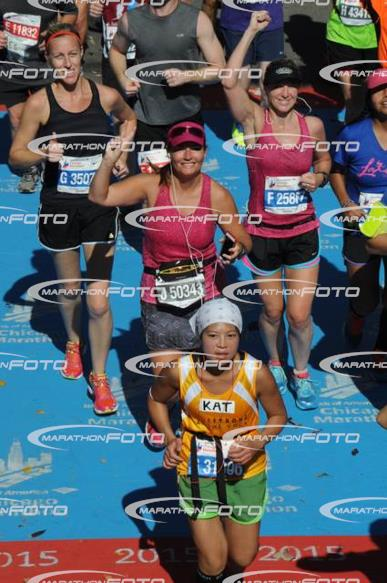
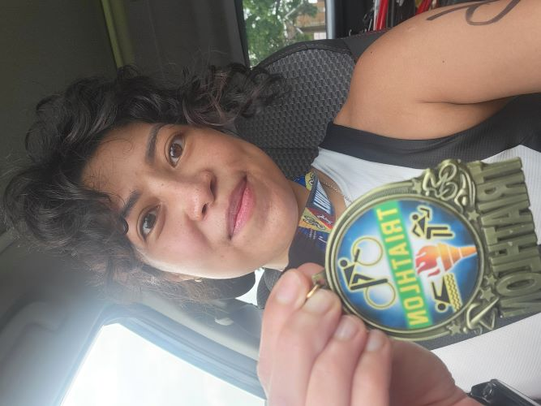

Do you like swimming? Do you like biking? Do you like running? Would you like to do all three of them in succession? Then triathlons are the sport for you! They may sound crazy or impossible to do, but I assure you, they are not. There are different distances, so you can find one that would suit your preferences. Background on me: I started training for triathlons last year, completing my first sprint triathlon in Wauconda over the summer. I am more of a runner and will typically do at least 1-2 half marathons a year. I ran my first marathon in 2015 as a charity runner with my local YMCA for the Chicago Marathon.
Triathlons come in different distances and time averages
- The Sprint: consisting of a swim of about 800m, a bike anywhere from 10-14 miles (16km to 22.5km), and a run that usually falls around 5k distance (3.5 miles). Amateur and beginner triathletes: 1.5 hours.
- The Olympic: .93 mile (1500m) swim, 24.8 mile (40k) bike ride, 6.2 mile (10k) run. About 3 hours.
- The Half Ironman/ Ironman 70.3: 1.2 mile (1900m) swim, 56 mile (90km) bike ride, 13.1 mile (21.1km) run. 6 hours.
- The Ironman: 2.4 mile (3.9 km) swim, 112 mile (180.2 km) bike ride, 26.2 mile run (41.1 km). This is a behemoth. Yes, that is a full marathon at the end. This may just take a few years to prepare for, and that's okay. Average time: 12 hours, 38 minutes.
| Triathlon | Swim | Bike | Run | Time (Avg) |
|---|---|---|---|---|
| Sprint | 800m | 22.5k | 3.5k | 1.5 hours |
| Olympic | 1500m | 40k | 10k | 3 hours |
| Ironman 70.3 | 1900m | 90k | 21.1k | 6 hours |
| Ironman | 3.9k | 180.2k | 41.1k | 12 hours, 38 min |
Start with the Sprint Triathlon if you’ve never done one.
If you can ride a bike, you are in good shape. Bonus if you have running experience and can do at least a 5k. I would start with a few sprint triathlons since they are the easiest and quickest to train for, and they require only basic equipment. You don’t need a fancy touring bike- borrowing your neighbor’s Huffy will do. Also, if you are a natural swimmer, you’ll kill it in the first leg since swimming is the hardest for most people. I am a runner, not a natural swimmer, so I had to work extra hard to get comfortable swimming laps.
If you want to do a sprint triathlon with no experience, I recommend you start with a training plan for a 5k.
It helps to understand what it feels like to run these distances, both mentally and physically since they come at the end of your race when you are the most tired and drained. I recommend the Hal Higdon couch to 5k training plan, since it is the most accessible and I believe the most comprehensive.
Recovery is a non-negotiable and part of your training. Don’t underestimate its importance.
A lot of people will train without allotting the proper time to recover. (I did this the first time I trained for my first marathon, which cost me a whole year after pulling a groin muscle bending over to pick up laundry.) Give yourself enough time to stretch, sleep, and foam roll your muscles. Take rest days to let your body recover.
Have a plan of attack, but don’t rush it.
Give yourself half a year to get your running endurance up. Give yourself another half to add in swimming and biking if you’ve never done it before. It’s better to go slow and build your base up gradually. When you feel you are ready, start a 4 month training plan for your first triathlon. You’ll need at least 16 weeks.
Make sure you have a solid kit.
You need a bit of equipment since you are doing multiple sports.
- Swimming: bathing suit or swim trunks, swim cap, goggles, flip flops for pool training. If you want flippers, buoys, pulls, that’s all extra training stuff. You probably won’t need it yet.
- Biking: a bike with hand breaks, a helmet, bike shorts with padding, and a place to store your water bottle.
- Running: a good pair of running shoes, running socks, running shirt (not cotton), running shorts or pants (depending on the weather).
- Tri-suit: this is what I use for race day and saves me the time and effort of figuring out what to wear and how to change. I wore it to swim, on the bike, and on my run. Saved me so much time!
Have fun!
A triathlon is suppose to be fun and exciting. Never take it too seriously- and enjoy the journey! I loved doing the Wauconda sprint tri because I got to swim in a lake (and I love natural bodies of water). I really dislike swimming pools (although they are necessary for training). And the bike ride was really beautiful-everything was green and in bloom for summer. I never run a race with time in mind, I just do it because it feels good.
My first marathon- we all have to start somewhere!
Sprint Tri Wauconda 2022